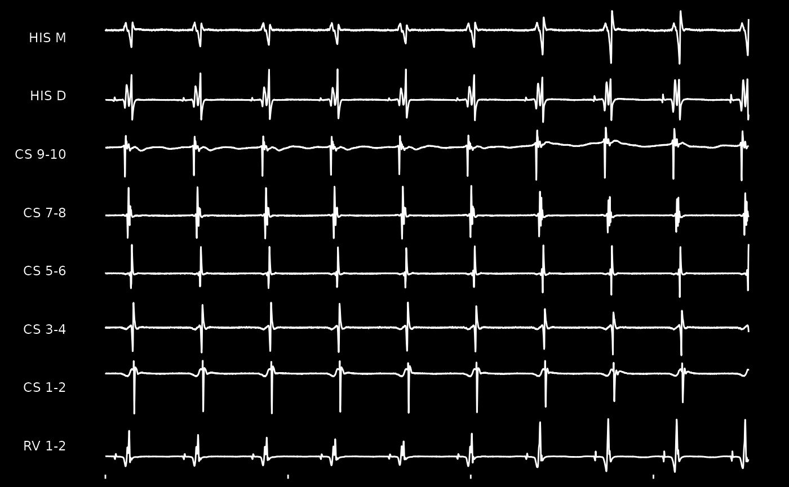

Reading in Data
Thie software supports reading in certain types of raw cardiac
electric signal currently. This includes both intracardiac and
extracardiac data. Please see read_muse() and
read_lspro() as examples. If additional formats are
requested, please file an issue and
provide a sample file (which primarily requires signal, in whatever
format, and meta-information about the individual channels).
Here is a simple example of taking a MUSE XML file and converting it to digital signal. This was tested against the 9th version of the MUSE XML format.
# Read in data
fp <- system.file('extdata', 'muse-sinus.xml', package = 'EGM')
xml <- readLines(fp)
head(xml)
#> [1] "<?xml version=\"1.0\" encoding=\"ISO-8859-1\"?>"
#> [2] "<!DOCTYPE RestingECG SYSTEM \"restecg.dtd\">"
#> [3] "<RestingECG>"
#> [4] " <MuseInfo>"
#> [5] " <MuseVersion>9.0.10.18530</MuseVersion>"
#> [6] " </MuseInfo>"
# Instead, can read this in as a MUSE XML file
# Now as an `egm` class
ecg <- read_muse(fp)
ecg
#> <Electrical Signal>
#> -------------------
#> Recording Duration: 10 seconds
#> Recording frequency 500 hz
#> Number of channels: 12
#> Channel Names: I II III AVF AVL AVR V1 V2 V3 V4 V5 V6
#> Annotation:
# Can now plot this easily
ggm(ecg) +
theme_egm_light()
Similarly, intracardiac recordings obtained through LSPro can be read in as well. The function itself documents how this generally work.
# Read in data
fp <- system.file('extdata', 'lspro-avnrt.txt', package = 'EGM')
lspro <- readLines(fp)
head(lspro, n = 20)
#> [1] "[Header]" "File Type: 1"
#> [3] "Version: 2" "Channels exported: 11"
#> [5] "Samples per channel: 3522" "Start time: 15:17:57"
#> [7] "End time: 15:18:01" "Ch. Info. Pointer: 320"
#> [9] "Stamp Data: C" "Mux format: 0"
#> [11] "Mux Block Size: " "Data Format 1"
#> [13] "Sample Rate: 1000Hz" "Channel #: 1"
#> [15] "Label: I" "Range: 5mv "
#> [17] "Low: .5Hz" "High: 100Hz"
#> [19] "Sample rate: 1000Hz" "Color: FFFFFF"
# Instead, read this as signal, breaking apart header and signal data
# Presented as an `egm` class object
egram <- read_lspro(fp)
egram
#> <Electrical Signal>
#> -------------------
#> Recording Duration: 3.522 seconds
#> Recording frequency 1000 hz
#> Number of channels: 11
#> Channel Names: I III V1 CS 1-2 CS 3-4 CS 5-6 CS 7-8 CS 9-10 HIS D HIS M RV 1-2
#> Annotation:
# Similarly, can be visualized with ease
ggm(egram, channels = c('HIS', 'CS', 'RV'), mode = NULL) +
theme_egm_dark() 
Class Introduction
The EGM package introduces a specific data-oriented
class called egm (note the lower-case spelling
compared to the package name). This class is the primary data structure,
and allows for compatibility within multiple signal types, including
when reading in WFDB-formatted data. Once in this class, everything can
be written out as well - with the preferred option being for the stated
WFDB format.